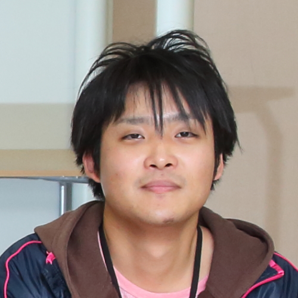

Profile
Name
Takuya Yoda
Organization Name
- Department of Advanced Information Technology, Graduate School of Information Science and Electrical Engineering, Kyushu University
Course
- Master Course (Second year)
Contact
yoda@limu.ait.kyushu-u.ac.jp
TEL
- TEL : +81-6-6105-6074
Address
Institute for Datability Science, Osaka University
2-8 Yamadaoka, Suita, Osaka 565-0871, Japan
Research
Publication
International Conferences
- Takuya Yoda, Hajime Nagahara, Rin-ichiro Taniguchi, Keiichiro Kagawa, Keita Yasutomi, Shoji Kawahito, “Dynamic Photometric Stereo Method using Multi-tap CMOS Image Sensor”, International Conference on Pattern Recognition (ICPR2016), pp.2357-2362, Mexico, Dec., 2016 (Acceptance Rate:16.7%, orals) [paper] [bibtex]
- Takuya Yoda, Hajime Nagahara, Rin-ichiro Taniguchi, Keiichiro Kagawa, Keita Yasutomi, Shoji Kawahito, “Dynamic Photometric Stereo Method using Multi-tap CMOS Image Sensor”, 3rd International Workshop on Image Sensors and Imaging Systems(IWISS2016), pp1-2, Nov, 2016 [detail] [bibtex]